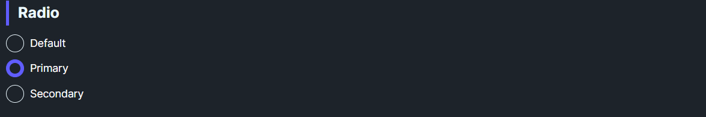

DaisyRadio is a styled RadioButton with 8 color variants and 5 size presets. It shows a filled inner circle when checked and supports standard radio grouping via GroupName. Use variants for semantic meaning or brand alignment in forms and option groups.
| Variant | Description |
|---|---|
| Default | Neutral fill when checked. |
| Primary / Secondary / Accent | Brand-aligned fills. |
| Success / Warning / Info / Error | Semantic fills for status or validation. |
| Size | Outer | Inner | Use Case |
|---|---|---|---|
| ExtraSmall | 8px | 4px | Dense tables/toolbars. |
| Small | 10px | 5px | Compact forms. |
| Medium (default) | 12px | 6px | General usage. |
| Large | 14px | 7px | Spacious layouts or touch targets. |
| ExtraLarge | 16px | 8px | Hero sections or large touch targets. |
<!-- Basic group -->
<StackPanel Spacing="6">
<controls:DaisyRadio Content="Option A" GroupName="demo" />
<controls:DaisyRadio Content="Option B" GroupName="demo" IsChecked="True" />
</StackPanel>
<!-- Semantic variants -->
<controls:DaisyRadio Content="Success" Variant="Success" GroupName="status" />
<controls:DaisyRadio Content="Error" Variant="Error" GroupName="status" />
<!-- Compact radios -->
<controls:DaisyRadio Content="Small" Size="Small" GroupName="sizeDemo" IsChecked="True" />
<controls:DaisyRadio Content="XS" Size="ExtraSmall" GroupName="sizeDemo" />GroupName for mutually exclusive choices; WinUI handles exclusivity within a group.Padding if you customize spacing.